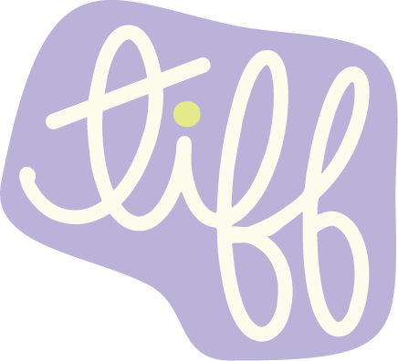

Identity Foundation
Hi, my name is Tiffany Winnie. While I typically go by just Tiffany, I think including my middle name gives a fuller picture of who I am. Winnie is an adaptation of my Chinese name, Wing Yi: Wing meaning 'singing' or 'glory/honor' and Yi meaning 'friendship/righteousness.' It's fitting because I've always strived to represent kindness and authenticity, and to be someone who shows up for others. My way of upholding these values has been to move through the world with the belief that everyone deserves to know how it feels to be seen and heard, but also finding the road less traveled to do this with.
As the eldest daughter of an immigrant family, I often felt like (and still do) I had to be the quiet backbone that kept things running. I am a first generation American whose mom worked nights and dad worked days, so I spent a lot of time "figuring things out" with my younger brother in tow. Being the first American-born, I also inherited the unspoken role of ambassador of American culture and of my parents' native culture (Hong Kong). This meant bearing the responsibility of being that translator when my mom didn't understand why what she just did might be considered rude or what the social ramifications would be if I didn't own that pair of shoes that everyone else at school had.
All these years of "figuring things out" and social translating would eventually sprout into my love for design. By the age of 14, I lived to customize my Xanga blog with custom headers, cursors, and music using HTML. This was my oasis. In the physical world, I was often putting others' needs/wants before mine and I didn't always have the resources to express myself. But on the internet, I had the ability to make resources and do whatever I wanted. I carried this passion with me into college and earned a BFA in Graphic Design before leaving my hometown of NYC to chase the California sun. I started my career as an unpaid intern at a boutique marketing agency in San Diego and eventually climbed the ranks to Creative Director.
Today, I am a Senior Graphic Designer at Costco Auto Program, earning a Masters in HCI&D because, while I love Graphic Design deeply, I've discovered that the world of design is vast. Over the years, I have gained a lot of industry experience but my hope is to produce on a more impactful level. While it's been fun trying to guess what the CEO's favorite color is, I want to operate on intention rather than on "instinct."
Ecosystem & Friction Map
Alignment Moves
I. Assumption Dump
This was one of the first alignment moves we made (facilitated by Sujin, inspired by a small studio ;)). The partners LOVED this meeting and it was a great way to set the bar for the work our team would be delivering to Discovery Cube.
The Assumption Dump was a way for us to align what we observed from our onsite visit with what the partners may already know from either past experience or from being an expert in the field. As a group, we created an affinity diagram of our observations from our onsite visit, which we synthesized into eight themes. For us to operate based on these themes would have been assuming, but we decided to pause to align with our partners. We took the eight themes to our partners and asked them to tell us whether, in their eyes, the theme was true, false, or something we could actually assume.
The workshop felt like a game show and was a great first alignment move because it gave us the answers we needed to confidently move forward with our research and it gave everyone space to speak their minds. We were able to take our own observations and align our understanding with our partners'. We began to understand how they thought—the reasons behind hesitations to answers or how we could make our research statements better/more relevant.
II. Mild, Medium, Spicy Workshop
Armed with our initial research themes, we conducted 5 expert interviews with a selection of educators, an athletic coach, and a marine biologist to find out more about how kids learn. We did a couple rounds of open coding and created another affinity diagram from our interview data and again synthesized it down to eight themes for design focuses. We had our own preconceptions about these themes but, depending on our partners' needs and their stakeholders' needs, our design focuses could really change. So we paused here and set up our second alignment move: Mild, Medium, Spicy Workshop (also facilitated by Sujin and inspired by a small studio, there might be a theme here…).
While we were not able to get through most of our insights, we still gained deeper insight into how our partners think. What was valuable was the insight our partners shed on how they were having difficulties giving a ranking; with one insight, they said that the first part was spicy, but the second part was mild. It showed us how their brains were working and gave us context behind the decision. It helped us better align our mental models to theirs.
III. Build Your 8 Y.O. Self Workshop
In week 7, we started looking into Macroverse user needs. Our target has always been elementary-aged kids around the age of 8 but even within our Capstone group, we all had different definitions in mind—with a 12-year age range, we all came with varying biases. Our partners even have a different idea of what our users want/like, especially after working in the museum space for many years. So, I wanted to do an exercise that would get us to a somewhat common understanding of what makes 8 y.o.'s tick.
I workshopped a 2-part Figjam exercise called "Build Your 8 Y.O. Self," where you could embody a hybrid persona of your core personality and what you could remember from when you were 8. In part 1, we stamped emojis to create a moodboard of our personas and at the end, everyone "stole three things" from someone else's board that you wish you'd included on your own. This gave an immediate glimpse into how we all were as kids and also made us realize what we had in common from "stealing three things." In part 2, we interactively answered questions like "what are you most proud of accomplishing?" or "who was your favorite teacher and why?" and finally, left a "message to the Macroverse."
We began to see patterns in what made us proud and also the kinds of things we all still remembered from that age. This brought whimsy to our meetings and also helped us start "empathy brainstorming" using our new aligned understanding. We had fun getting to know each other a little better while also gathering relevant insights for our research.
Multi-Audience Narrative
Design Stakeholder
Non-Design Stakeholder
Growth & Reflection
How I've Grown this quarter:
Deeper introspection into what exactly my values are and where they stem from
I’ve always “just figured things out” without giving it any extra thought. After this course, I realize how much my upbringing and my experiences affects how and why I make the decisions I make.
Deeper introspection into what effect my values actually have on the decisions I make as a designer
I’ve brought to light that my passion as a designer is also influenced by my values. My desire for everyone to feel seen or at least have a chance, makes me want to design a certain way.
Deeper introspection about alignment in work and in life
I realize I have the fortune of working in a space that also aligns with who I am. I have and always have felt very grateful to be doing what I’m doing. This course has made me realize that I’m right where I’m supposed to be.
Next Steps
Though I still have some digging and reflecting to do, I think I have an idea of where I want to go next.